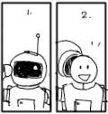

|
SET SPEED FOR STANDARD BY NINE AND CLEAR THE NEUTRO BLASTERS FOR FIRING! This is your official invitation to spacecaption1999, this year's glitzy incarnation of the UK's longest-running alternative comics convention. Over the past six years Caption has successfully combined the best and brightest of small press and alternative talent, people and product with large quantities of beer and sunshine. This year, we've added tin-foil, silver grease-paint and rockets on strings to the mix to bring you a celebration of alternative comics which looks both backwards and forwards to the future in small press comics. So, haul out your silver jumpsuits, blow the dust off your ray-gun, and come and burn off your excess millennium fever at Caption, the annual get-together for small press comiceers everywhere. OUR MISSION IS TO SEEK OUT NEW PEOPLE AND NEW PLANETS AND SELL THEM THINGS! spacecaption1999 is a non-profit making convention held over two days in the Oxford Union, a comfy and pleasant site in the middle of Oxford, within easy walking distance of the bus and train stations. Day one -- Saturday -- starts at ten with introductions and coffee at the bar, before moving on at around noon into the programme of events. Shoot the moon at our panel discussions, indulge in a little inner-space exploration at our artists workshop, or simply wander around looking at stars, rockets and little space-ships in Caption's exhibition. Throughout the day various exotic and otherworldly goods will be on sale from Caption's star dealers, and you can also sell your own comics, without the inconvenience of having to sit behind a table, from the Caption Table. Also running throughout the day, small discussion groups will be looking at practical topics like distribution, event-running, getting published and the like, so if you want to share ideas, get encouragement or find out more, turn up to talk it over with someone who's been there already. If all this sounds like far too much work, there's always the bar and the garden -- safe retreats, well stocked with art materials and pads. DAMMIT JIM, I'M A DOCTOR, NOT A MEMBER OF THE NATIONAL THEATRE OF EARTH PRIME!  The evening programme kicks off with another opportunity to shop: the CAPTION Cartoon Art Trust charity auction. It's been full of wonderful things for the past six years, and, with your help, it will be again this year. Turn to the centre pages to find out how to donate artwork or other items. Later still, Caption regulars 'The Theatre of Earth Prime' will be scrutinising another comics classic -- in all probability, Scott McCloud's Understanding Comics. Oh, the insanity. |
|
SMOKE ME A KIPPER -- I'LL BE BACK FOR BREAKFAST! (EVENTUALLY) Sunday starts slow, and we won't expect anyone to be up to rational discussion before one, when the main panel takes place. This year it's on speculation and the creative process. Sounds scary? Come and find out whether your best ideas are being beamed into your head by aliens. Other attractions on the Sunday include a second chance to visit our dealers' tables, more small discussion groups, and a glittery workshop, just like you used to have at playgroup. Many people, however, just use Sunday as a chance to kick back and relax with their mates, so don't feel under any pressure to do anything. If you want to laze about, you'll be in good company. STAR GUESTS MORE THRILLING THAN A CHASE THROUGH AN AIRLOCK! Caption's guest list is everyone who turns up, since our members tend to be small-pressers, comics artists, cartoonists, and other people involved in the production or promotion of comics. But, this year, as ever, we have some bright, beautiful and entertaining people helping us out on panels or in other events. Comics legend Bryan Talbot will be there, to talk about Heart of Empire (to be published by Dark Horse) and his life in comics. Also, look out for cult cartoonist Steven Appleby, co-creator of everyone's favourite whingeing rocket captain, Captain Star. It's early days yet, but the rest of the guests will be a mix of new faces and Caption regulars, like Paul Gravett (Cartoon Art Trust), Erica Smith (Girlfrenzy), Pete Ashton (Bug Powder Dustribution), Andy Roberts, Pete Pavement (Slab-O-Concrete), Martin Hand, and Rachael House. ALL IRREGULARITIES WILL BE HANDLED BY THE FORCES CONTROLLING EACH DIMENSION
Caption is run by Jenni Scott,
Jeremy Dennis,
Damian Cugley, Andy
Roberts, and Adrian Cox, but we run it to give you, our members, a
great comics party. So if you have any ideas about how to make it
better, or if you can help us out, please do get in touch. For
example, if you have ideas for, or the expertise to run, a small
discussion group, or know someone who'd be the perfect guest, or
of any creators from abroad in the country at the time, let us
know.
... AND LATER, THE UNIVERSE WILL EXPLODE FOR YOUR VIEWING PLEASURE spacecaption1999 will drift to a halt at 6pm on the Sunday, when we'll need you to pack your spaceships and leave. By that time we hope you'll have had a thoroughly spaced-out and fantastic weekend. See you there! |